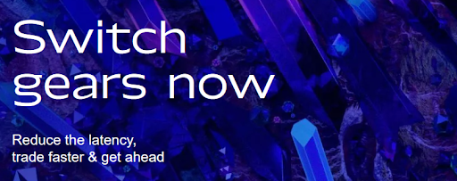

Overview

Magmio overview
Magmio is a platform that processes market data directly in FPGA network card and creates book, computes set of predefined statistics, evaluates trading strategies and generates orders. All this is done with sub-microsecond latency thanks to unique FPGA accelerated solution.
Magmio gives the power and performance of FPGAs to everyone. Abstraction of the FPGA internals allows a quantitative analyst, equity trader or anyone else to focus on the trading strategy with no needs to worry about low- level programming, market data formats or digital hardware design. All commodity parts (decoder, book, order sending) are resolved, the user just defines trading strategy in a high- level programming language.
Magmio is delivered as a hardware-software solution composed of an FPGA network interface card with appropriate firmware and an API including examples of software applications. Extremely low latency is achieved thanks to the unique hardware-software co-design.
User manual overview
Magmio User Manual describes Magmio FPGA trading platform from the user perspective and gives instructions on how to start working with the Mamgio platform. In the beginning, configuration of necessary equipment is described as well as ways how to configure platform parameters like subscribed feed multicast addresses or symbol/series indices.
Installation and preparation of Magmio package
Section Installation and preparation of Magmio package describes installation and preparation processes of Magmio package on production and synthesis machine including Magmio firmware preparation.
Exanic tools for Cisco cards
Section Exanic tools describes available tools for management of Cisco FPGA cards.
Magmio API
Section Magmio API describes Magmio Application Programming Interface (API). Largest parts are focused on examples of using Magmio API with user parameters.
Mapping and configuration files
Section Mapping and configuration files describes structure of mapping and configuration files. Mapping file contains data about all market instruments. Configuration file contains feed and order sender settings (IP addresses, usernames etc.).
Writing the strategies
Section Writing the strategies describes user strategy interface and data types, shows a few hints for writing strategies and contains information about latency limit of hardware part of strategies.
Testing strategies in Vivado HLS
Section Testing strategies in Vivado HLS describes our HLS testbench suitable for a user strategy testing directly in Vivado HLS through simulation and cosimulation.
Recovery
Section Recovery describes options of controlling and tracking recovery module behavior from Magmio API.
Book Channel
Section Book Channel describes options of controlling book channel module behavior from Magmio API.
Strategy Prefilter
Section Strategy Prefilter describes behavior of strategy prefilter unit and options of its control from Magmio API.
Pre-Trade Risk Check
Section Pre-Trade Risk Check contains information about using Pre-Trade Risk Check module.
Order Sender
Section Order Sender describes Order Sender and methods that are used to enable sending orders to the market.
Status information
Section Status information describes how various status information updates are passed to user.
Firmware synthesis
Section Firmware synthesis describes a process of firmware synthesis that must be done after every modification of hardware strategies.
Software model, simulation and verification
Section Software model, simulation and verification describes software model. Model is used to test trading strategies (without need of firmware synthesis) and for verification (side-by-side comparison of software model and firmware pipeline outputs).
Doxygen Documentation overview
Magmio Doxygen Documentation describes Application Programming Interface (API) from the user’s perspective. There are described classes, methods, data structures and enumeration types used in the API. There are examples enclosed that show how to use these classes and methods to control whole trading solution.
When learning how to use Magmio solution, it is recommended to start with Magmio User’s Manual and go through Doxygen documentation afterwards. When a class or a method is mentioned in User’s Manual, it contains a link to appropriate page in Doxygen Documentation.